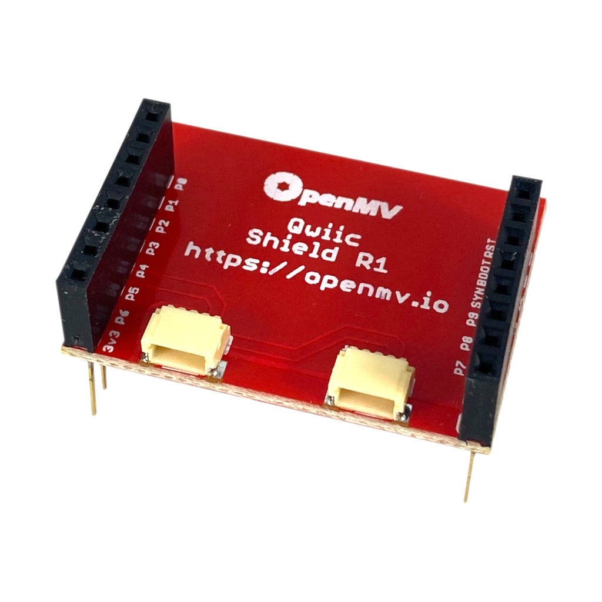
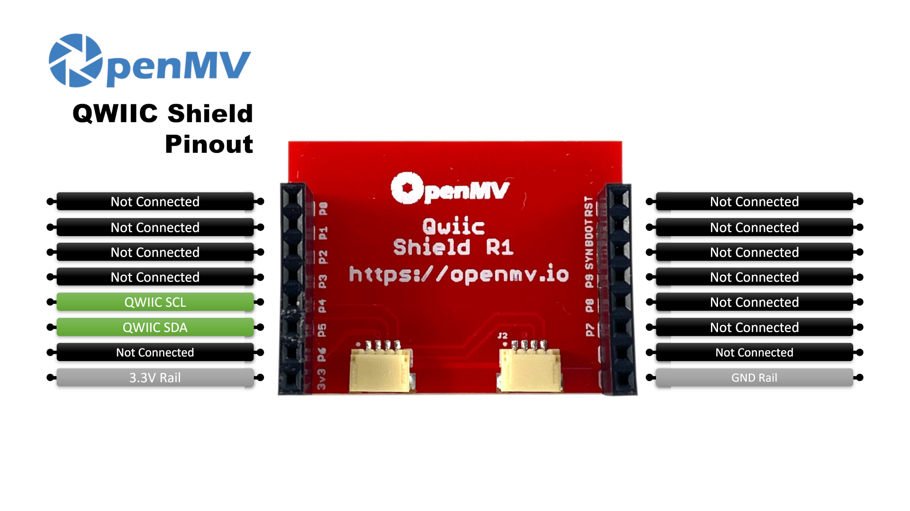

QWIIC Shield¶
Il QWIIC Shield offre alla OpenMV Cam due connettori Qwiic (JST-SH a 4 pin) collegabili a margherita e cablati ai pin I2C, in modo da poter collegare direttamente le schede dell’ecosistema SparkFun Qwiic.
{kind=link}

Per il datasheet completo, le foto e l’acquisto consulta la pagina prodotto del QWIIC Shield.
Punti salienti¶
Due connettori Qwiic JST-SH per collegare a margherita periferiche I2C
Instrada i pin P4 (SCL) e P5 (SDA) della OpenMV Cam
Compatibile con l’ecosistema SparkFun Qwiic
Nessuna resistenza di pull-up integrata (usa pull-up software o esterne)
Pinout¶
{kind=link}

Riferimento dei pin¶
Pin |
Funzione |
|---|---|
P4 |
Qwiic SCL — clock I²C verso entrambi i connettori Qwiic |
P5 |
Qwiic SDA — dati I²C verso entrambi i connettori Qwiic |
Linea 3.3V |
Alimenta i dispositivi Qwiic collegati |
Linea GND |
Massa comune (instradata anche a entrambi i connettori Qwiic) |
Utilizzo¶
Cerca i dispositivi Qwiic collegati sul bus I²C. Lo shield non monta resistenze di pull-up a bordo: abilita i pull-up interni via software, oppure affidati ai pull-up integrati nelle schede Qwiic collegate:
from machine import Pin, SoftI2C
bus = SoftI2C(scl=Pin("P4", Pin.OPEN_DRAIN, Pin.PULL_UP),
sda=Pin("P5", Pin.OPEN_DRAIN, Pin.PULL_UP),
freq=100_000)
print("Qwiic devices:", [hex(addr) for addr in bus.scan()])